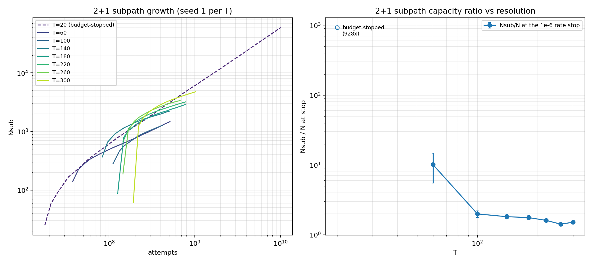

Subpaths: no jam, a linear-growth floor at small T, and a ~1.5× capacity ratio at large T
First quantitative pass at post-jam subpath packing. Framing rule (Kevin's design point): subpaths do not jam — phase 2 has no ceiling, every Nsub is conditional on the stop rule, and the physics lives in growth and decay laws, not capacities. The campaign found that rule enforcing itself:

- At T = 20 the admission rate never decays: it
floors near 7×10-6 (above the 1e-6 stop) and
Nsub grows linearly in attempts (tail exponent 0.994)
to 73,600 subpaths over 80 uniques before the budget cut it
off — a steady-state assembly line, the cleanest possible
demonstration that subpaths do not jam. Five uncapped jobs
ground ~10 h each before the
sub_attemptsbudget knob was added. - At T ≥ 60 the rate does decay through 1e-6, and the stop-state capacity ratio falls with resolution: Nsub/N = 10.1 (T=60) → 2.0 (T=100) → ~1.5–1.6 (T=220–300), flattening — at matched convergence depth, a high-resolution jammed universe retains roughly 1.5 subpaths per unique worldline.
- Bookkeeping: the store's
n_finalis the phase-1 (unique) N, and it reproduces the subpaths-offpack2d_e6baseline cell-for-cell — phase 2 does not perturb phase 1.
Open next: the functional form of the T ≥ 60 rate decay (the curves bend over but a single decade past onset is too short to classify power-vs-log), whether the capacity ratio's flattening at ~1.5 is an asymptote, and what a subpath-count exponent would even mean given stop-conditionality. A deeper (1e-7) subpath arm on mother+kitt is the obvious follow-up.